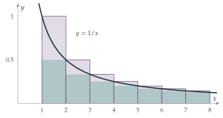

STEP II 1994, Question 13
Read the question before you go on. It is in the STEP Support Programme’s question database: step.maths.org/questions/94-s2-q13
The hook
A football sticker album has \(600\) stickers to collect, sold one at a time at random. How many stickers should you expect to buy to fill the album? The first few hundred go quickly, since almost every sticker is new. But as the album fills, new stickers get rarer, and the very last one takes on average \(600\) purchases on its own. The total comes to about \(4200\), seven times the size of the album.
This is the coupon collector’s problem. Its answer combines two ideas: the waiting time for a success, and the harmonic series \(1 + \frac12 + \frac13 + \cdots\), which grows like \(\ln n\). You met the harmonic series diverging in Section 2.3; here its slow growth is exactly what you pay for completing a collection.
Before you start
If each packet independently gives a new card with probability \(p\), what is the expected number of packets you open up to and including the first new card?
The number of packets \(X\) has a geometric distribution: \(\mathrm{P}(X = k) = (1 - p)^{k-1}p\). Its expectation is \(\frac1p\). (One quick way to see this: \(\mathrm{E}(X) = 1 + (1 - p)\mathrm{E}(X)\), since you open one packet, and with probability \(1 - p\) you are back where you started.) If a new card turns up a third of the time, you expect to wait three packets.
Working it through
Stage 1 Waiting for a new card
With \(r\) different cards already, a packet gives a new card with probability \(\frac{n - r}{n}\), independently of previous packets. So the expected number of packets until the next new card is \[\frac{1}{(n - r)/n} = \frac{n}{n - r}. \qed\]
Stage 2 Comparing a sum with an integral
On the interval \(r \leq x \leq r + 1\), between which two values does \(\frac1x\) lie? What does that say about the area under the curve?
Since \(\frac1x\) is decreasing, \(\frac{1}{r+1} \leq \frac1x \leq \frac1r\) on \([r, r + 1]\). Integrating over an interval of length \(1\) gives \[\frac{1}{r + 1} \leq \int_r^{r+1}\frac{\mathrm{d}x}{x} \leq \frac1r. \qed\] In pictures (Figure 9.11.1): the area under the curve is squeezed between a rectangle of height \(\frac{1}{r+1}\) and one of height \(\frac1r\). Adding these from \(r = 1\) to \(r = n - 1\), the integrals join up to \(\int_1^n\frac{\mathrm{d}x}{x} = \ln n\), and so \[\frac12 + \frac13 + \cdots + \frac1n \leq \ln n \leq 1 + \frac12 + \cdots + \frac{1}{n - 1}. \qed\]

Stage 3 Completing the set
The total number of packets is the sum of the waiting times for the first card, the second new card, and so on. What is its expectation?
Let \(X_r\) be the number of packets needed to go from \(r\) different cards to \(r + 1\). The total is \(X_0 + X_1 + \cdots + X_{n-1}\), and since expectation adds, \[\mathrm{E}(\text{total}) = \sum_{r=0}^{n-1}\frac{n}{n - r} = n\Bigl(\frac1n + \frac{1}{n - 1} + \cdots + 1\Bigr) = nH_n,\] where \(H_n = 1 + \frac12 + \cdots + \frac1n\) is the \(n\)th harmonic number. From Stage 2, \(\ln n + \frac1n \leq H_n \leq \ln n + 1\), so \(H_n\) is about \(\ln n\) when \(n\) is large, and I must expect to eat roughly \[n\ln n \text{ packets}. \qed\]
Looking back
Break a long wait into stages. The total time split into \(n\) waiting times, each of a simple geometric kind.
Expectation is additive. We never needed the distribution of the total, only the expectations of the pieces.
Compare sums with integrals. The diagram turned a sum we cannot evaluate into a logarithm, with error at most \(1\).
What’s really going on
How good is the estimate?
The comparison can be sharpened. The shaded gaps between the curve and the upper rectangles in Figure 9.11.1 have a finite total area, so \(H_n - \ln n\) tends to a limit, \[\gamma = \lim_{n \to \infty}(H_n - \ln n) = 0.5772156649\ldots,\] Euler’s constant. (Nobody knows whether \(\gamma\) is rational.) So the expected number of packets is \(n\ln n + \gamma n + \frac12 + \cdots\). For the \(600\)-sticker album, \(600 \times (\ln 600 + 0.577) \approx 4185\), which is the figure quoted in the hook.
Where does the time go? The stages are very unequal. Collecting the first half of the set takes only about \(n\ln 2 \approx 0.69n\) packets, while the last card alone takes \(n\) on average. Most of the effort goes into the last few cards, which is why collectors swap duplicates.
Concentration
The expected value is only the start: how much does the total vary? The variance of the total is \(\sum n r/(n - r)^2\), which is about \(\frac{\pi^2}{6}n^2\) (the sum \(\sum 1/k^2 = \pi^2/6\) from Section 2.4 appears). So the standard deviation is about \(1.28n\), much smaller than the mean \(n\ln n\) when \(n\) is large: the total is concentrated around its mean. Paul Erdős and Alfréd Rényi showed in 1961 that, more precisely, the total minus \(n\ln n\), divided by \(n\), has a limiting distribution, the Gumbel distribution, which also describes the largest of many random quantities (Section 12.25).
The problem goes back to Abraham de Moivre (1712) and Laplace. It now appears in many disguises. How many random tests are needed to check every component of a system? How long until a random walk on a network has visited every node? How many times must a computer hash table be probed? In each case the answer involves \(n\ln n\). In biology, the same calculation estimates how many sequencing “reads” are needed to cover a whole genome.
The thinking skill
The expectation of a sum is the sum of the expectations, whether or not the pieces are independent. Split a complicated random quantity into simple pieces.
This is one of the most useful facts in probability. Here it reduced the coupon collector’s problem to \(n\) geometric waits; in Section 9.8 it gave the expected number of matches without any calculation. At university, the same idea powers the analysis of algorithms and the probabilistic method in combinatorics.
Try this next
Half a set. Show that the expected number of packets to collect \(\frac n2\) different cards (for even \(n\)) is \(n(H_n - H_{n/2})\), and that this is about \(n\ln 2\).
Distinct cards. After opening \(k\) packets, show that the expected number of different cards you have is \(n\bigl(1 - (1 - \frac1n)^k\bigr)\). (Hint: for each card, find the probability that you have it, and add.) Roughly how many packets give you \(95\%\) of the set?
Two collectors. Two children collect the same set, sharing packets so that a duplicate for one may be new for the other. Show that the expected number of packets to complete both sets is about \(n(\ln n + \ln\ln n)\). (This is harder; first convince yourself that it is much less than \(2n\ln n\).)
A sharper bound. Use the trapezium rule picture instead of rectangles to show that \(H_n - \ln n\) is decreasing, and that \(H_n - \ln n - \frac{1}{2n}\) is increasing. Deduce \(0.5 < \gamma < 0.7\) from small values of \(n\).
Further reading
Geoffrey Grimmett & David Stirzaker, One Thousand Exercises in Probability (Oxford University Press). Many variations on the coupon collector.
Julian Havil, Gamma: Exploring Euler’s Constant (Princeton University Press). Everything about \(\gamma\) and the harmonic series, at an accessible level.
Michael Mitzenmacher & Eli Upfal, Probability and Computing (Cambridge University Press). The coupon collector and its uses in computer science.